Hakui, Ishikawa: things to do, food and stays
Hakui · Ishikawa
Hakui
Highlighted on the Ishikawa map.
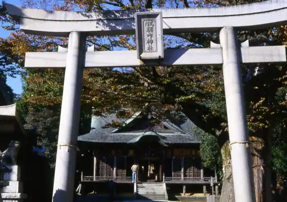
Stay
ちりはまホテルゆ華
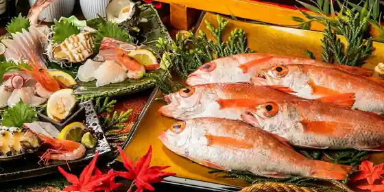
Chirihama Hotel Yu Hana
休暇村 能登千里浜
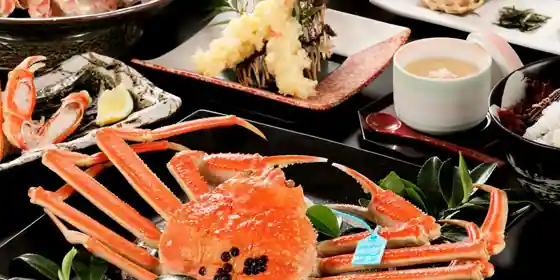
Kyukamura Noto Chirihama
Inn at Gensenkakenagashi Onsen in Hakui with free-flowing hot spring baths.
海の宿mare
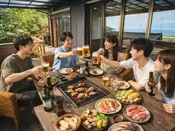
Umi No Yado mare
Inn in Ichinomiya, Hakui with pet-friendly rooms and a sauna.
はたご屋ちゅうべ
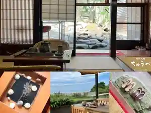
Hatago Ya Chube
Inn at Uminozekkeito Onsen in Taki, Hakui with scenic views and one group per day.
能登柴垣海岸はるこ
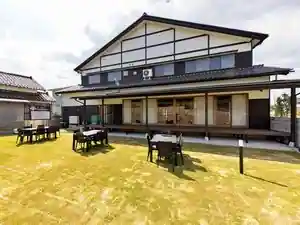
Noto Shibagaki Kaigan Haruko
Dining
マルガージェラート
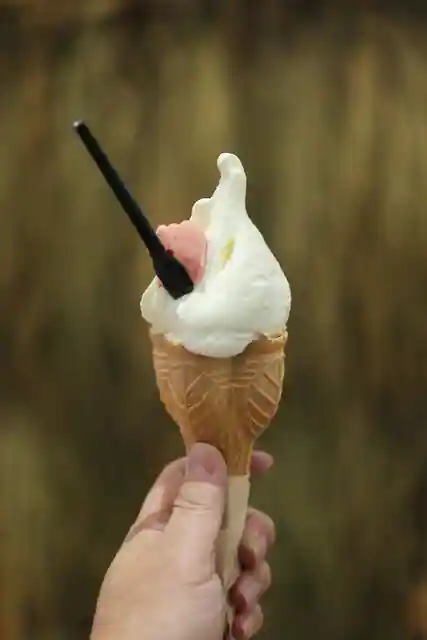
Marugajierato
能登千里浜レストハウス
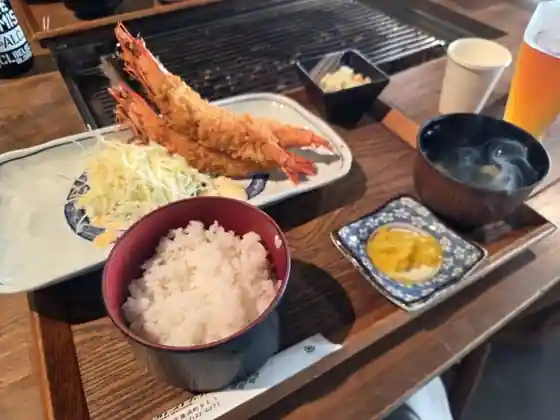
Noto Chirihama Resuto House
まぐろや 羽咋店
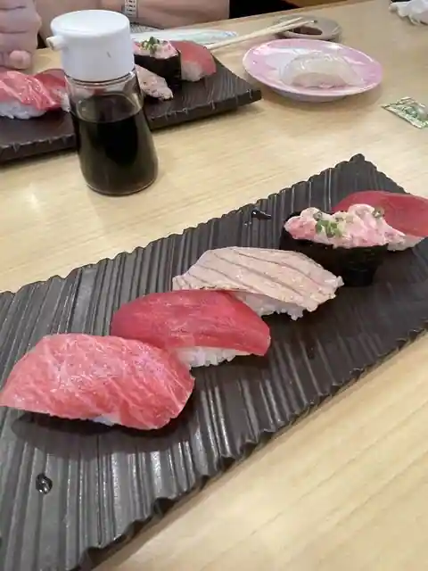
Maguroya Hakui
SSTR CAFE chirihama
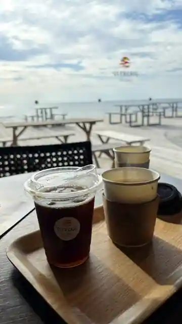
SSTR CAFE chirihama
道の駅 のと千里浜
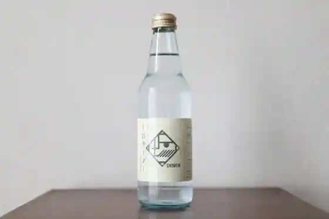
Michi No Eki Noto Chirihama
そば処 茗荷庵
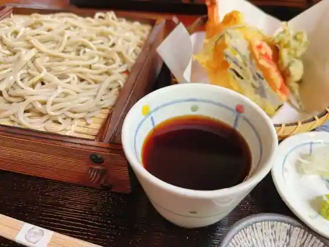
Soba Tokoro Myoga Iori
浜焼き 能登風土 千里浜店
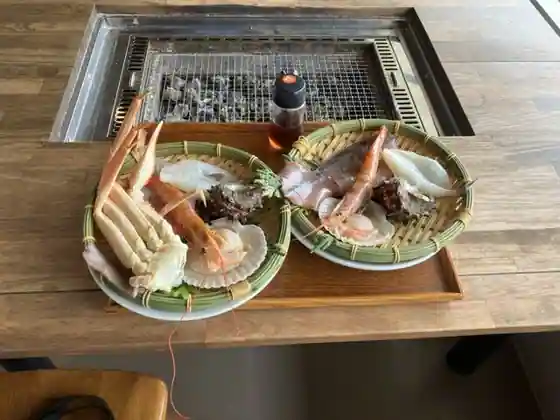
Hamayaki Ki Noto Fudo Chirihama
魚
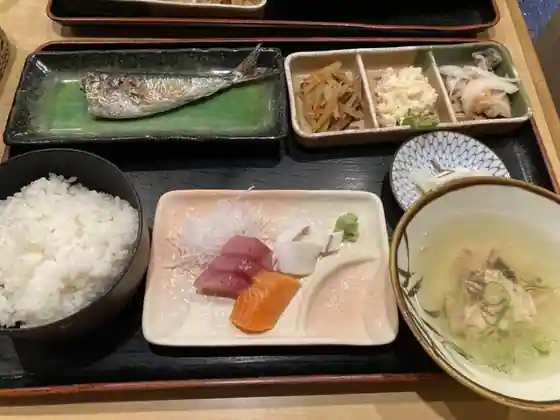
Sakana
ホテルゆ華
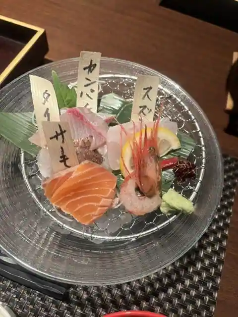
Hotel Yu Hana
ファーマーズベーカリー
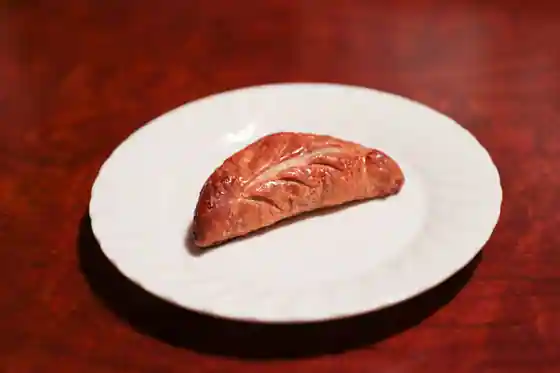
Famazu Bakery
浄楽
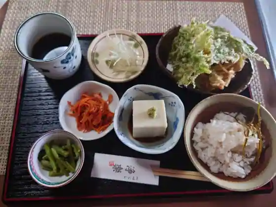
Jo Raku
ヤハタすしべん 千里浜インター店
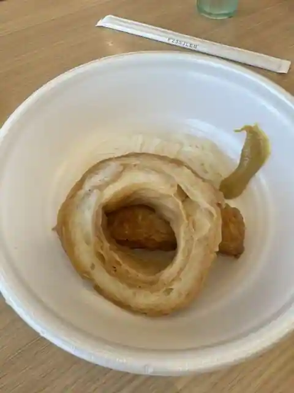
Yahata Sushiben Chirihama Inta
開口笑
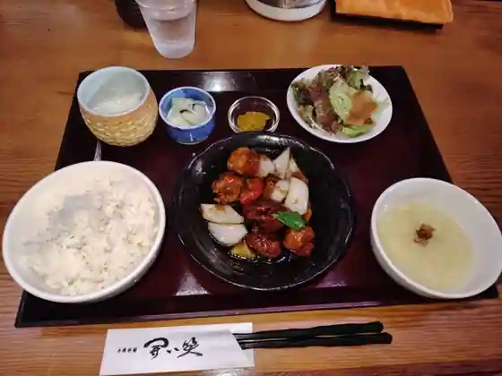
Kaiko Warai
ケーキ・ホームベーカリー モリモト
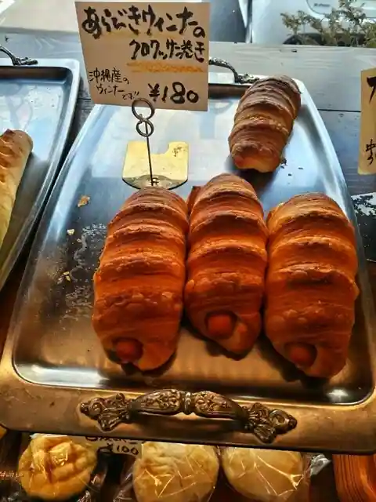
Keki Homu Bakery Morimoto
香華園
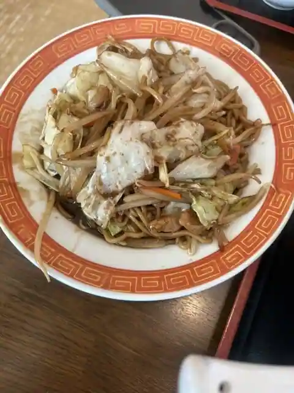
Koge Sono
多門
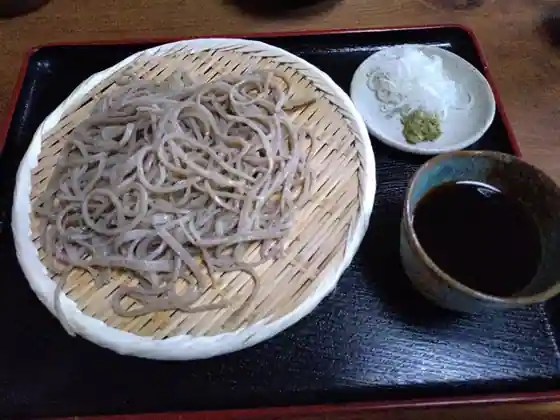
Tamon
神音カフェ
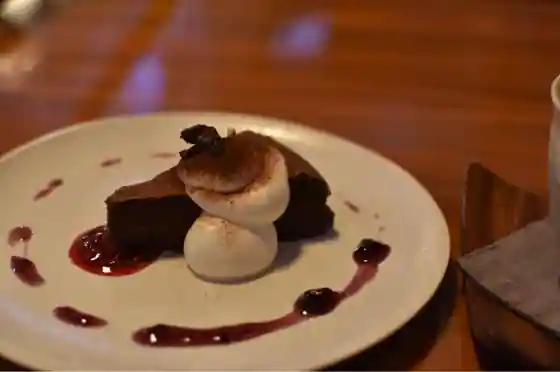
Kami Oto Cafe
グリル&ハンバーグ ニノ
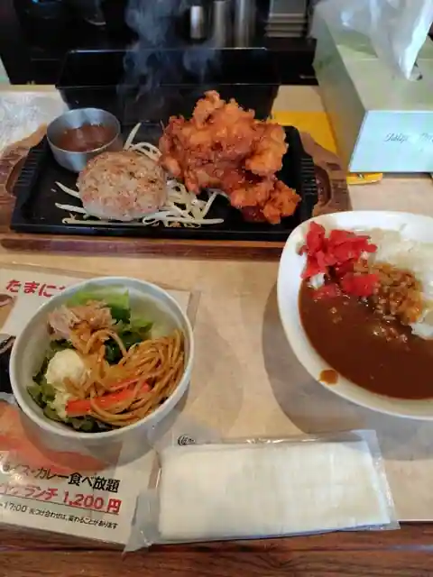
Grill & Hamburg Nino
ヤハタすしべん 一の宮店
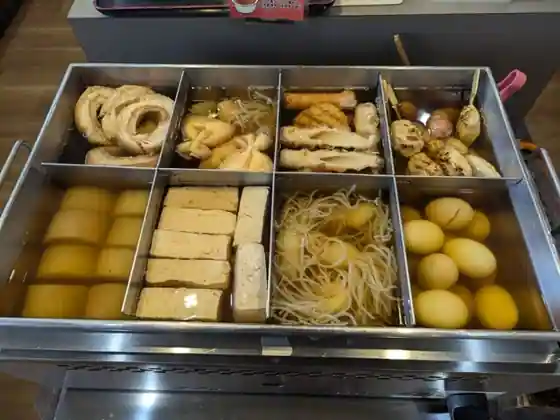
Yahata Sushiben Ichi No Miya
のとののど
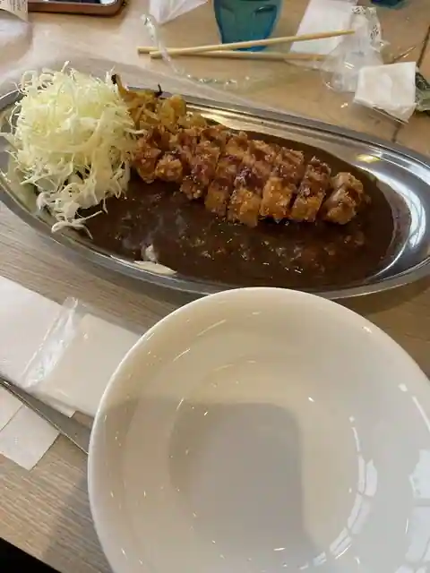
Notononodo
多根さ 羽咋店
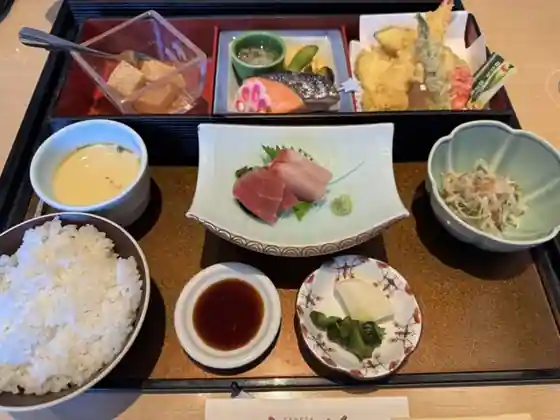
Tane Sa Hakui
オレンジガーデン
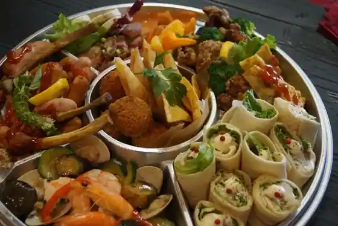
Orenji Garden
Raccolta Gelato
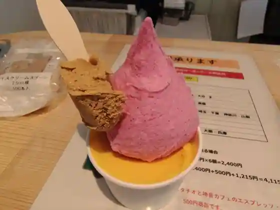
Raccolta Gelato
Sights
Uchu Kagaku Museum Kosumoairu Hakui
Noto Kuniichi Miya Keta Taisha
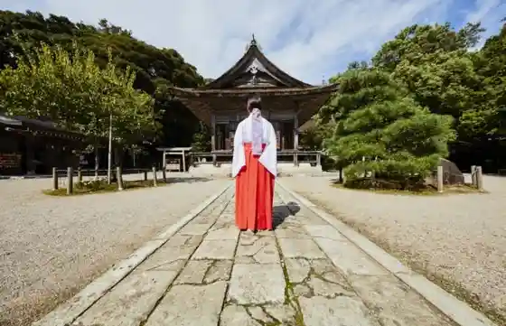
Roadside Station no to Chirihama
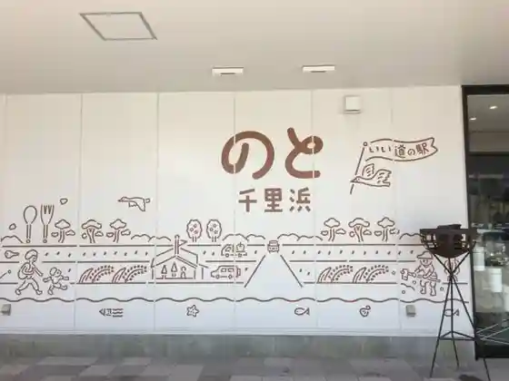
Chirihama Hotel Yu Hana
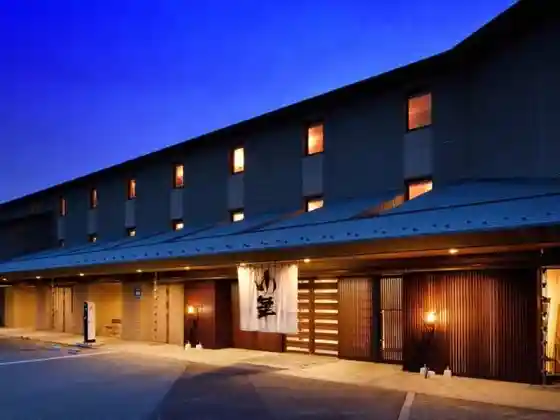
Noto Chirihama Resutohausu
Honzan Myo Sei Tera
Gion Iwa
Kamiko Village
National Noto Seishonen Koryu no Ie
Nagamitsu Tera (Ken Shitei Historic Site)
Nagisa Mobireji
Yuforia Chirihama
Hakucho Village (Ochi Kata)
Hakui Mayu Take Daichi Shizen Green Park
Yoshizaki Tsugi Ba Yayoi Park
Shibagaki Kofun Gun (Ken Shitei Historic Site)
Hakui Shrine
Noto Jofu Orimoto Yamazaki Asaori Mono Workshop
Goishigamine Haikingukosu
Otomo Iemochi Kahi (Hakui Chirihama Town)
Shogaku In
Hakui Chuo Park
Yutaka Zai In
Hakui Kanko Boranteiagaido Rekishi Roman (Konchima Hakui)
Nagate Shima Shizenkansatsu Kosu
Noto Taisha Yaki Kamamoto
Hakui Folk History Museum
Takazawa Jozo
Origuchi Nobuo Fushi no Kahi
Hakui Yakusho